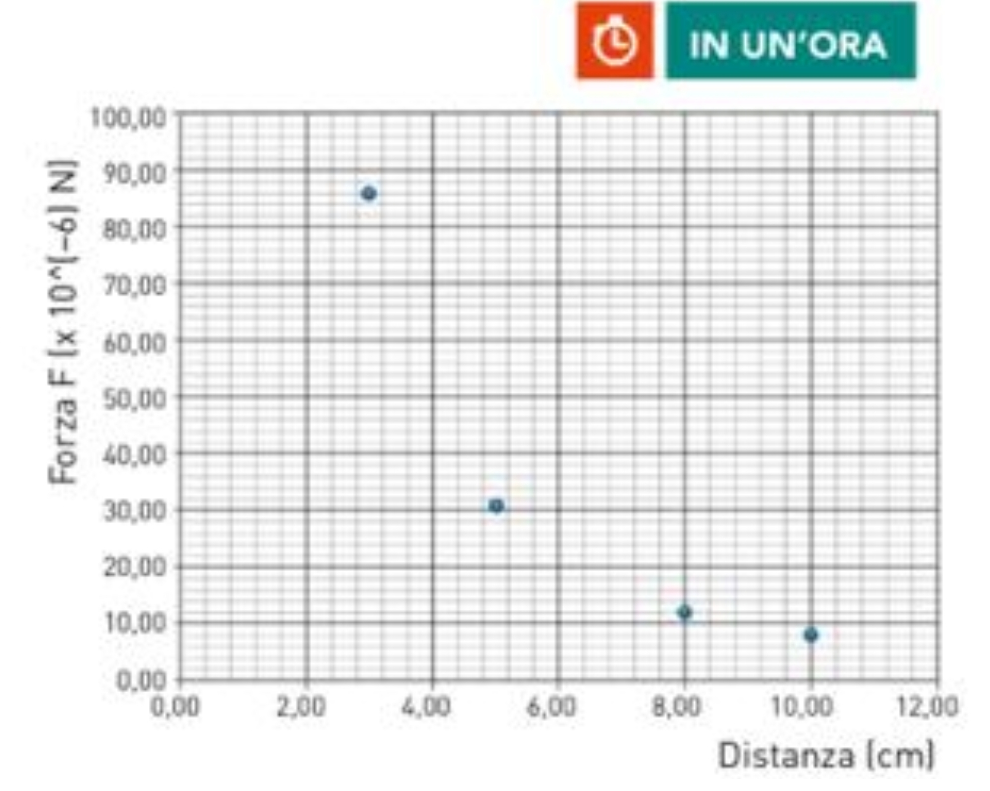

Sono date tre sferette A, B, C conduttrici identiche, tutti dotati di supporti isolanti. All'inizio la sfera A é elettrizzata con una carica positiva \(Q_0\), mentre le sfere B e C sono scariche. Poi B é messa a contatto con A, C é posta in contatto con B e infine C é messa in contatto ancora con A.
La figura mostra i risultati di un esperimento in cuisi é misurata la forza di repulsione tra le sfere A e B nella loro condizione finale e poste in aria. La distanza r é quella tra i centri delle sferette.
La lege sperimentale che si può dedurre è la legge di Coulomb.
$$F = \frac{8.99*10^{9}*\frac{3}{32}*Q^{2}}{r^{2}}= \frac{8.99*10^{9}*\frac{3}{32}*(9.5*10^{-9})^{2}}{r^{2}} = \frac{7.6*10^{-8}}{r^{2}}$$
$$Q_A = Q_B = \frac{Q}{2}$$
$$t_2$$$$Q_B = Q_C = \frac{Q}{4}$$
$$t_3$$$$Q_C = Q_A = \frac{3}{8} * Q$$
$$t_f$$$$Q_A = \frac{3}{8} * Q$$ $$Q_B = \frac{Q}{4}$$ $$Q_C = \frac{3}{8} * Q$$
$$30*10^{-6} = \frac{8.99*10^{9}*\frac{3}{32}*Q^{2}}{0.05^{2}}$$
$$Q = 9.5*10^{-9} C = 9.5 nC$$
$$Q_A = 9.5*10^{-9}*\frac{3}{8} = 3.6 nC$$
$$Q_B = 9.5*10^{-9}*\frac{1}{4} = 2.4 nC$$